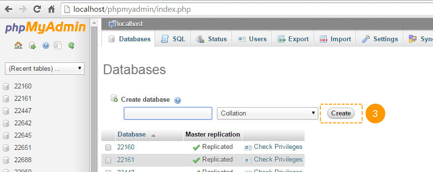

Введение Что находится в шаблоне и для чего его можно использовать
Благодарим Вас за приобретение шаблона Joomla. Данная документация состоит из нескольких частей и охватывает весь процесс установки и настройки веб-сайта Joomla с нуля. Мы сделали все возможное, чтобы это руководство было понятным и удобным в использовании.
Что представляет собой Joomla CMS?
Joomla CMS - это открытое программное обеспечение для построения веб-сайтов. Оно позволяет создавать веб-сайты и мощные онлайн приложения, а также почти не требует технических навыков или знаний в управлении. Множество особенностей, в том числе простота использования и расширяемость, сделали Joomla наиболее популярной программой для веб-сайтов. Детали
Что такое шаблон Joomla?
Шаблон Joomla - это тема для платформы Joomla CMS. Другими словами, внешний вид веб-сайта Joomla можно легко изменить путем установки нового шаблона за несколько несложных шагов. При всей своей простоте, шаблон Joomla содержит все необходимые исходные файлы, которые можно редактировать желаемым образом.
Структура шаблона
Приобретенный комплект шаблона состоит из нескольких папок. Осмотрим содержание каждой папки:
- Documentation - содержит файлы документации
- documentation.html - основной файл документации. Вы его сейчас читаете :)
- Joomla - содержит архив с темой Joomla, версию для быстрой установки и файл со скриптом для разархивации.
- theme###.zip - архив с темой. Включает все файлы темы. Нужно устанавливать с помощью менеджера расширений Joomla
- fullpackage.zip - представляет собой комплект для полной установки Joomla с файлами движка, темы и демо-данными (дамп базы данных, образцы изображений)
- unzip.php - файл, используемый для разархивации fullpackage.zip после загрузки на хостинг сервер
- Screenshots - содержит скриншоты темы.
- Sources - вмещает файлы демо-данных темы:
- psd - исходные файлы шаблона для Adobe Photoshop(.psd)
- to_the_root_folder - папка с образцами данных, необходимыми, чтобы веб-сайт выглядел как на демо шаблона. Содержимое данной папки нужно загрузить в корневую директорию Joomla.
- dump.sql - файл дампа базы данных. Вмещает демо-данные темы.
- pkg_bundle.zip - включает дополнительные расширения для темы
- fonts_info.txt - содержит ссылки, по которым можно скачать шрифты шаблона
- info.txt - инструкция по распаковыванию файлов демо-данных
Подготовка Что нужно сделать перед началом работы
Прежде, чем перейти к установке веб-сайта Joomla, нужно полностью подготовиться. Рекомендуется выполнить следующие подготовительные шаги:
Программное обеспечение
Для полноценной работы с шаблоном Joomla мы рекомендуем скачать все требуемые приложения. Список необходимого программного обеспечения находится на странице предпросмотра шаблона.
Требования для различных шаблонов могут меняться, поэтому мы перечислим лишь основные:
- Прежде всего нужны правильные приложения для распаковывания защищенного паролем архива sources_#########.zip. Можно воспользоваться WinZip 9+ (Windows) и Stuffit Expander 10+ (Mac).
- Также может понадобиться программа Adobe Photoshop. Она используется для редактирования исходных файлов .PSD и необходима, если требуется изменить графический дизайн и изображения шаблона.
- Для редактирования исходного кода файлов шаблона нужно использовать редактор кода, например Adobe Dreamweaver, Notepad++, Sublime Text и т.п..
- Чтобы загрузить файлы на хостинг сервер, потребуется FTP менеджер, например Total Commander, FileZilla, CuteFTP и т.д..
Хостинг
Поскольку Joomla CMS является приложением PHP/MySQL, необходимо подготовить хостинг сервер.
При наличии активного сервера, нужно проверить его на соответствие требованиям Joomla и на готовность использовать веб-сайты Joomla.
Также можно установить Joomla на компьютер при помощи локального сервера. Для создания локального хостинг сервера необходимо использовать программное обеспечение WAMP, AppServ, MAMP и т.п. Любое из них устанавливается как обычная программа и поддерживает Joomla.
Вы можете воспользоваться следующими туториалами для настройки локального сервера:
Начало использования Куда нажимать, чтобы приступить к работе
Полная установка
У меня нет веб-сайта Joomla и я хочу установить его с нуля.
При помощи этого метода устанавливаются движок Joomla CMS, шаблон Joomla, демо-данные и все требуемые расширения.
Установка шаблона
У меня уже есть веб-сайт Joomla и я лишь хочу поменять его внешний вид путем установки нового шаблона.
Данный метод устанавливает шаблон Joomla и все требуемые расширения.
Полная установка
Полная установка используется в том случае, если нужно установить веб-сайт Joomla. Предусматривается предварительное выполнение всех подготовительных шагов и наличие необходимых программ.
Создание базы данных
Когда все файлы будут загружены на хостинг сервер, необходимо подготовить новую базу данных для веб-сайта Joomla. Ее можно создать через инструмент управления базами данных в контрольной панели хостинга (обычно PhpMyAdmin).
При помощи phpMyAdmin возможно создать новую базу данных в 3 простых шага: (см. следующие слайды)
- Щелкните кнопку Database (база данных ) в верхнем меню навигации, чтобы перейти в список баз данных
- Введите название базы данных в поле "Create new database (Создать новую базу данных)"
- Нажмите справа на кнопку Create (Создать)
База данных появилась в списке. Кликните по ее названию, чтобы получить доступ к ней:
-

1. Отктройте вкладку "Database (База данных)", чтобы перейти в список баз данных
-

2. Введите название базы данных
3. Щелкните кнопку "Создать" -

4. База данных появилась в списке. Кликните по названию, чтобы получить доступ в базу данных.
Вы также можете воспользоваться детальным видео туториалом Как создать базу данных
При возникновении сложностей при создании базы данных, необходимо обратиться к хостинг провайдеру за поддержкой.
Загрузка и разархивация
Для начала работы с Joomla, требуется загрузить файлы на хостинг сервер. Это можно сделать при помощи файлового менеджера хостинга или альтернативного FTP менеджера.
- Откройте шаблон и перейдите в папку 'joomla'
- Выделите файлы 'unzip.php' и 'fullpackage.zip' и загрузите на сервер ( Как загрузить файлы на сервер. )
- Введите путь к файлу 'unzip.php' на сервере(http://your_domain_name/unzip.php) в адресной строке браузера.
- Должно появиться следующее окно:

Рис 1. Стартовый экран скрипта Unzip.php.
- В поле 'Choose your zip file (Выберите файл zip)' выберите загруженный файл fullpackage.zip.
- В поле 'Unzip to (Распаковать в)' укажите директорию, куда нужно распаковать файлы.
- Нажмите кнопку 'Unzip (Распаковать)', чтобы распаковать файлы.
Задайте правильные разрешения на папку, куда нужно разархивировать файлы. Разрешения должны быть CHMOD 755 или 777 в зависимости от конфигурации сервера.
Установка Joomla CMS
Проверьте выполнение всех подготовительных шагов и наличие требуемых программ.
Откройте браузер и пропишите путь к директории Joomla в адресной строке браузера (например http://your_domain_name/joomla). Должен появиться экран установки Joomla CMS:
Шаг 1 Configuration (Конфигурация сайта)
В выпадающем меню "Select Language (Выбрать язык)" выберите язык установки Joomla.
Внимание: выпадающее меню "Select Language (Выбрать язык)" позволяет выбрать лишь язык процесса установки Joomla. Данная опция не влияет на язык веб-сайта.
Нужно заполнить все поля формы в разделе "Main Configuration (Основные настройки)". Обязательные поля отмечены звездочкой *.
Заполните поля "Admin Email (Email администратора)", "Admin Username (Имя администратора)" и "Admin Password (Пароль администратора)" в правой колонке, чтобы создать пользователя нового веб-сайта Joomla с административными правами.
"Admin Email (Email администратора)", "Admin Username (Имя администратора)" и "Admin Password (Пароль администратора)" требуются для доступа в админ-панель веб-сайта Joomla Web. Храните их в надежном месте.

Рис 2. Установка. Joomla CMS. Шаг 1. Конфигурация сайта
Когда все данные введены, нажмите кнопку в верхнем правом углу.
Шаг 2 Database (Конфигурация БД)
На втором этапе установки Joomla CMS необходимо ввести детали базы данных. Если они неизвестны, обратитесь к хостинг-провайдеру.
Поскольку Joomla устанавливается с нуля, нужно всего лишь ввести "Host Name (Название хостинга)", "Username (Имя пользователя)", "Database Name (Навзание базы данных)" и "Password (Пароль)". Остальные опции следует оставить по умолчанию, хотя возможны различия в зависимости от хостинг-провайдера.

Рис 3. Установка Joomla CMS. Шаг 2. Конфигурация БД
Когда введете детали, щелкните кнопку в верхнем правом углу.
Шаг 3 (Overview) Обзор
Установка Joomla CMS почти завершена. На этапе Overview нужно определиться с установкой демо-данных Joomla.
Внимание: Демо данные необходимы, если требуется, чтобы веб-сайт Joomla выглядел полностью как на демо со всеми изображениями, текстом и настройками модулей. Для этого выберите демо-данные под названием "sample_theme###", где ### - это номер темы.
Выберите демо-данные для установки или нажмите "None (Нет)", если необходим пустой веб-сайт Joomla без содержания..

Рис 4-1. Установка Joomla CMS. Шаг 3. Overview (Обзор). Импорт демо-данных
Ниже можно проверить, являются ли детали конфигурации базы данных и доступа в админ-панель действительными, и отправить их на email.

Рис 4-1. Установка Joomla CMS. Этап 3. Обзор. Конфигурация
Можно проверить настройки установки и проверить соответствие хостинг сервера требованиям Joomla. Если присутствуют красные предупреждения в "Recommended settings (Рекомендуемые настройки)", обратитесь к хостинг-провайдеру за дальнейшей поддержкой.

Рис 4.Установка Joomla CMS. Шаг 3. Настройки сервера
По окончанию нажмите кнопку в верхнем правом углу.
Шаг 4 Установка Завершена
Поздравляем! Вы установили Joomla

Рис 5. Установка Joomla CMS. Шаг 4. Установка завершена
С целью повышения безопасности удалите папку "Installation" из корневой директории Joomla .
Подсказка: Вы можете воспользоваться детальным видео туториалом Как установить движок Joomla 3
Внимание: если вы выполнили "Complete Installation (Полную установку)", можно пропустить разделы "Template Installation (Установка шаблона)", "Sample data installation (Установка демо-данных)" и "Extensions Installation (Установка расширений)", поскольку все эти элементы уже полностью установлены.
Теперь можно приступить к настройке веб-сайта Joomla CMS. Нажмите кнопку "Site (Сайт)" , чтобы открыть веб-сайт или "Administrator (Администратор)", чтобы перейти в админ-панель Joomla.
Установка шаблона
Данный метод установки следует использовать, если у вас уже есть веб-сайт Joomla и просто требуется поменять его внешний вид на тему шаблона.
Шаг 1 В админ-панели Joomla перейдите в меню "Extensions (Расширения) > Extensions Manager (Менеджер расширений) ".

Рис 6. Установка шаблона Joomla. Шаг 1. Менеджер расширений
Шаг 2 Во вкладке Package File (Файл шаблона) нажмите кнопку "Choose File (Выбрать файл)" и выберите файл "theme###.zip" из папки "joomla" шаблона.

Рис 7. Установка шаблона Joomla. Шаг 2. Загрузка архива с темой
Щелкните кнопку для установки шаблона Joomla.
Шаг 3 После завершения загрузки, необходимо активировать установленный шаблон. В верхнем меню выберите "Extensions (Расширения)> Template Manager (Менеджер шаблонов)"

Рис 8. Установка шаблона Joomla. Шаг 3. Активация шаблона
Выберите новый шаблон и нажмите кнопку "Make Default (По умолчанию)" в верхнем левом углу. Теперь можно посмотреть, как стал выглядеть веб-сайт.
Установка демо-данных
Демо-данные используются для того, чтобы веб-сайт Joomla выглядел как на демо шаблона. К ним относятся образцы статей, картинок, настройки модулей, веб-сайта и т.п. Если вам не нужны образцы изображений или другой демо-контент, пропустите данный этап.
Установка демо-данных проводиться в два простых шага.
Шаг 1. Загрузка демо-картинок.
Чтобы загрузить демо-картинки, откройте шаблон и перейдите в папку "sources". Там находится папка "to_the_root_directory". Она содержит файлы, которые нужно загрузить в корневую папку установки Joomla. Для загрузки файлов на сервер воспользуйтесь файловым менеджером.
Шаг 2. Импорт файла SQL.
Последним и наиболее важным шагом установки демо-данных является импорт файла SQL. Файл SQL - это дамп базы данных, где хранятся все данные веб-сайта Joomla. Файл SQL можно импортировать при помощи инструмента управления базами данных (phpMyAdmin). Файл SQL шаблона "dump.sql" находится в папке "sources".
НЕЛЬЗЯ импортировать файл SQL в базу данных действующего веб-сайта, поскольку это перепишет содержимое базы данных и весь контент будет утерян.
Внимание: Перед импортом файла SQL убедитесь, что префикс таблиц вашей базы данных соответствует префиксу таблиц в файле SQL.
Префикс таблиц базы данных можно проверить непосредственно в инструменте управления базами данных. Обратите внимание на названия таблиц. Префикс - это набор символов перед названием табоиц. (например, в таблице "jos_assets" префикс - "jos_"). Также префикс базы данных можно найти в файле "configuration.php" в корневой папке. Строка 19: public $dbprefix = 'jos_'; (где префикс - "jos_")
В случае, если префикс таблиц базы данных другой, откройте файл "dump.sql" в текстовом редакторе и при помощи функции "Найти и заменить" (горячие клавиши CTRL+F или CTRL+H ) замените префикс "jos_" table (используется в SQL файле) префиксом базы данных. Вы также можете воспользоваться детальным видео туториалом, как изменить префикс базы данных в файле SQL.
Теперь можно импортировать файл SQL в базу данных.
Чтобы импортировать демо-данные в базу данных, выполните следующее: (см. слайдер)
- Выберите нужную базу данных в списке слева в инструменте phpMyAdmin
- Откройте вкладку "Import (Импорт)" в верхнем меню навигации
- Нажмите "Choose file (Выбрать файл)" и найдите файл dump.sql в папке "sources" шаблона
- Щелкните кнопку "Go (Вперед)", чтобы импортировать демо-данные
-

1. Выберите требуемую базу данных
-

2. Откройте вкладку "Import (Импорт)"
-

3. Щелкните кнопку "Choose file (Обзор)" и выберите файл dump.sql в папке шаблона "sources"
4. Нажмите кнопку "Go (Вперед)" , чтобы импортировать демо-данные
Вы также можете воспользоваться детальным туториалом как импортировать файл SQL при помощи инструмента phpMyAdmin
Установка модулей
Темы Joomla содержат дополнительные расширения: модуля, плагины и компоненты, которые применяются с целью расширения функциональности. Все дополнительные расширения можно легко установить при помощи специального архива.
Данный архив находится в папке 'sources' шаблона и называется 'pkg_bundle.zip'. Его очень просто установить, как и любое другое расширение или тему, через админ-панель Joomla > Менеджер расширений.
- Откройте админ-панель Joomla. В панели управления выберите 'Extensions (Расширения)'. В появившемся выпадающем меню щелкните 'Extensions Manager (Менеджер расширений)';
- Выберите опцию 'Install (Установка)' в левой колонке;
- Щелкните кнопку 'Browse/Choose file (Обзор/Выбрать файл)' и найдите архив 'sources/pkg_bundle.zip';
- Нажмите кнопку 'Upload and install (Загрузить и установить)', чтобы установить все модуля.

Если тема содержит расширения, не включенные в файл 'pkg_bundle.zip', их нужно установить отдельно. Установка выполняется таким же образом, что и 'sources/pkg_bundle.zip' через 'Extensions Manager (Менеджер расширений)'.
Названия архивов с расширениями обычно начинаются с 'mod_', 'com_' или 'plg_', поэтому их очень просто узнать.
Настройка модулей
Веб-сайт Joomla состоит из двух основных частей - секция контента и позиции модулей (для более наглядной информации ознакомьтесь с картой позиций модулей). Модуля используются в Joomla чтобы выводить контент в подготовленных позициях.
Схема позиций модулей
Доступные позиции могут отличаться в шаблонах, но, в общем, карта модулей выглядит следующим образом:

Рис 9.Схема позиций модулей шаблона Joomla
Как видно, зона контента отмечена другим цветом, поскольку по умолчанию в ней не могут быть отображены модули. Здесь располагается лишь контент страницы.
Позиции не отображаются, если в них нет модулей, поэтому они не будут просто занимать место на сайте.
Таблица настройки модулей
Внимание: Если вы установили демо-данные шаблона или использовали способ полной установки, можете пропустить данный шаг, поскольку он представляет собой ручную настройку модулей.
Следующая таблица показывает все модуля, использованные в шаблоне, и как их правильно настроить. Все модуля находятся в админ-панели Joomla в меню Extensions (Расширения) > Module Manager (Менеджер модулей).

Рис 10. Менеджер модулей Joomla
1 - Login Form
- Type (Тип) : mod_login
- Position (Позиция) : modal
- Class Suffix (Класс):
- Show Title (Показать заголовок): yes
- Order (Порядковый номер): 1
- Pages (Страницы): All
- Additional info (Дополнительная информация):
2 - Breadcrumbs
- Type (Тип) : mod_breadcrumbs
- Position (Позиция) : breadcrumbs
- Class Suffix (Класс):
- Show Title (Показать заголовок): no
- Order (Порядковый номер): 1
- Pages (Страницы): All
- Additional info (Дополнительная информация):
3 - Search
- Type (Тип) : mod_search
- Position (Позиция) : navigation
- Class Suffix (Класс): navbar-search pull-right
- Show Title (Показать заголовок): no
- Order (Порядковый номер): 1
- Pages (Страницы): All
- Additional info (Дополнительная информация):
4 - Copyright
- Type (Тип) : mod_footer
- Position (Позиция) : copyright
- Class Suffix (Класс):
- Show Title (Показать заголовок): no
- Order (Порядковый номер): 1
- Pages (Страницы): All
- Additional info (Дополнительная информация):
5 - Archived Articles
- Type (Тип) : mod_articles_archive
- Position (Позиция) : aside-right
- Class Suffix (Класс):
- Show Title (Показать заголовок): yes
- Order (Порядковый номер): 2
- Pages (Страницы): Blog
Blog. Donec eu elit in nisi
Blog. In neque arcu vulputate
Blog. Quisque gravida purus vitae
Blog. Vivamus luctus lectus sit
Blog. Vivamus congue turpis in augue
Blog. Curabitur eu dignissim velit
Archives - Additional info (Дополнительная информация):
6 - User Menu
- Type (Тип) : mod_menu
- Position (Позиция) : header
- Class Suffix (Класс):
- Show Title (Показать заголовок): no
- Order (Порядковый номер): 1
- Pages (Страницы): All
- Additional info (Дополнительная информация):
7 - Superfish Menu
- Type (Тип) : mod_superfish_menu
- Position (Позиция) : navigation
- Class Suffix (Класс): navigation
- Show Title (Показать заголовок): no
- Order (Порядковый номер): 1
- Pages (Страницы): All
- Additional info (Дополнительная информация):
8 - Camera Slideshow
- Type (Тип) : mod_camera_slideshow
- Position (Позиция) : showcase
- Class Suffix (Класс):
- Show Title (Показать заголовок): no
- Order (Порядковый номер): 1
- Pages (Страницы): Home
- Additional info (Дополнительная информация):
9 - Social Media
- Type (Тип) : mod_menu
- Position (Позиция) : copyright
- Class Suffix (Класс):
- Show Title (Показать заголовок): no
- Order (Порядковый номер): 1
- Pages (Страницы): All
- Additional info (Дополнительная информация):
10 - Login Form
- Type (Тип) : mod_login
- Position (Позиция) : aside-right
- Class Suffix (Класс): aside
- Show Title (Показать заголовок): yes
- Order (Порядковый номер): 3
- Pages (Страницы): Blog
FAQs
Testimonials
Blog Categories
Blog. Donec eu elit in nisi
Blog. In neque arcu vulputate
Blog. Quisque gravida purus vitae
Blog. Vivamus luctus lectus sit
Blog. Vivamus congue turpis in augue
Blog. Curabitur eu dignissim velit
Archives - Additional info (Дополнительная информация):
11 - Search
- Type (Тип) : mod_search
- Position (Позиция) : aside-right
- Class Suffix (Класс): aside
- Show Title (Показать заголовок): yes
- Order (Порядковый номер): 4
- Pages (Страницы): FAQs
Testimonials - Additional info (Дополнительная информация):
12 - Categories
- Type (Тип) : mod_articles_categories
- Position (Позиция) : aside-right
- Class Suffix (Класс):
- Show Title (Показать заголовок): yes
- Order (Порядковый номер): 1
- Pages (Страницы): Blog
Blog. Donec eu elit in nisi
Blog. In neque arcu vulputate
Blog. Quisque gravida purus vitae
Blog. Vivamus luctus lectus sit
Blog. Vivamus congue turpis in augue
Blog. Curabitur eu dignissim velit - Additional info (Дополнительная информация):
13 - Our Team
- Type (Тип) : mod_articles_news_adv
- Position (Позиция) : mainbottom
- Class Suffix (Класс): team
- Show Title (Показать заголовок): yes
- Order (Порядковый номер): 1
- Pages (Страницы): About
- Additional info (Дополнительная информация):
14 - carouFredSel
- Type (Тип) : mod_caroufredsel
- Position (Позиция) : feature
- Class Suffix (Класс):
- Show Title (Показать заголовок): yes
- Order (Порядковый номер): 1
- Pages (Страницы): Home
- Additional info (Дополнительная информация):
15 - Article Single
- Type (Тип) : mod_articles_single
- Position (Позиция) : aside-left
- Class Suffix (Класс):
- Show Title (Показать заголовок): yes
- Order (Порядковый номер): 1
- Pages (Страницы): About
- Additional info (Дополнительная информация):
16 - Komento Activities
- Type (Тип) : mod_komento_activities
- Position (Позиция) : aside-right
- Class Suffix (Класс):
- Show Title (Показать заголовок): yes
- Order (Порядковый номер): 1
- Pages (Страницы): Blog
Blog Categories
Blog. Donec eu elit in nisi
Blog. In neque arcu vulputate
Blog. Quisque gravida purus vitae
Blog. Vivamus luctus lectus sit
Blog. Vivamus congue turpis in augue
Blog. Curabitur eu dignissim velit - Additional info (Дополнительная информация):
17 - Komento Comments
- Type (Тип) : mod_komento_comments
- Position (Позиция) : aside-right
- Class Suffix (Класс):
- Show Title (Показать заголовок): yes
- Order (Порядковый номер): 1
- Pages (Страницы): Blog
Blog Categories
Blog. Donec eu elit in nisi
Blog. In neque arcu vulputate
Blog. Quisque gravida purus vitae
Blog. Vivamus luctus lectus sit
Blog. Vivamus congue turpis in augue
Blog. Curabitur eu dignissim velit - Additional info (Дополнительная информация):
18 - mod_twitter_widget
- Type (Тип) : mod_twitter_widget
- Position (Позиция) : aside-left
- Class Suffix (Класс):
- Show Title (Показать заголовок): yes
- Order (Порядковый номер): 1
- Pages (Страницы): All
- Additional info (Дополнительная информация):
Расширения
Функциональность веб-сайта Joomla можно увеличить при помощи различных расширений. Некоторые из них часто используются в наших шаблонах. В данной секции показано, как работать с расширениями.
Articles Newsflash

Рис 11. Модуль Articles Newsflash (Advanced)
Модуль Articles Newsflash (Advanced) представляет собой расширенную версию стандартного модуля Joomla Articles Newsflash. В дополнение к исходным функциям модуля предлагаются опции для шаблонов, основанных на Bootstrap.
Дополнительные опции
Number of columns (Количество колонок) - позволяет отображать статьи в несколько колонок.
Custom Link (Пользовательская ссылка) - позволяет отображать настраиваемую ссылку под контентом модуля. Ее можно задать на внешний URL или на страницу веб-сайта Joomla.

Рис 12. Кастомная ссылка
Pretext (Предварительный текст) - позволяет отображать пользовательский текст перед содержимым модуля.
Published Date (Дата публикации) - отображает дату публикации статьи.
Created by (Создано) - показывает автора статьи
Show intro images (Показывать изображения статьи) - позволяет отображать картинки статьи.
Intro image align (Выравнивание изображений статьи) - позволяет выравнивать изображения статьи
Image Swoop

Рис 13. Image Swoop Module
Модуль "Image Swoop" - это отличный адаптивный слайдер, представляющий собой смесь стандартного модуля Joomla “Articles Newsflash” и бесплатного плагина jQuery с открытым исходным кодом “Camera Slideshow”. Великолепно работает на компьютерах и мобильных устройствах iOs или Android. Совместим со всеми современными браузерами, начиная с IE8
Модуль "Image Swoop" содержит различные настройки конфигурации и находится в меню Extensions (Расширения)> Module Manager (Менеджер модулей) админ-панели Joomla. Все основные опции плагина jQuery "Camera Slideshow" меняются в настройках модуля.

Рис 14. Настройки Image Swoop
Наведите курсором мыши на опцию, чтобы увидеть ее описание. Более детальную информацию о плагине jQuery Camera Slideshow можно найти на официальном веб-сайте
Articles Single
Articles single - это модуль, позволяющий поместить статью в желаемую позицию.

Рис 15. Модуль Articles Single

Рис 16. Настройки Articles Single
Единственной отличительной опцией модуля является Custom Link (Кастомная ссылка). Она позволяет отображать кастомную ссылку под контентом модуля. Ее можно задать на внешний URL или страницу веб-сайта Joomla.
CarouFredSel
CarouFredSel представляет собой модуль карусели изображений, разработанный на основе стандартного модуля Joomla Articles Newsflash и плагина jQuery CarouFredSel.

Рис 17. Модуль CarouFredSel
Все необходимые опции карусели доступны в настройках модуля.
- Направление карусели
- Ширина элемента
- Видимые элементы
- Настройки анимации
- Навигация и контроль

Рис 18. Настройки модуля CarouFredSel
Плагин CarouFredSel содержит гораздо больше настроек конфигурации. Если Вам нужно добавить еще некоторые опции, необходимо редактировать файл \modules\mod_caroufredsel\tmpl\default.php.
Komento Comments
Komento - это компонент для комментариев в Joomla. Он позволяет добавлять комментарии в статьях Joomla.

Рис 19. Компонент Komento
Компонент Komento находится в меню Components (Компоненты)> Komento админ-панели Joomla.

Рис 20. Компонент Komento
Чтобы перейти в настройки, проследуйте в меню Components (Компоненты) > Komento > Integrations (Интеграция) и нажмите Articles (Статьи)
При помощи настроек компонента, можно активировать комментарии для определенных категорий и статей, добавить captcha, профили пользователей и т.п. Более детальную информацию о Komento можно найти на официальном сайте.
В наших шаблонax используется только стандартная версия Komento. Чтобы воспользоваться дополнительными возможностями данного модуля, мы рекомендуем подписаться на полную версию продукта. Чтобы увидеть полный список функций , посетите http://stackideas.com/komento.html?ref=kmfeature. Платная версия Komento также даст Вам профессиональную техническую поддержку
Форум Kunena
Kunena - компонент форума для Joomla. Он позволяет реализовать полностью функциональный форум, базирующийся на Joomla! CMS.

Рис. 21. Форум Kunena
Компонент Kunena доступен в панели управления Joomla в меню Components (Компоненты) -> Kunena.

Рис. 22. Настройки компонента Kunena
Более детальную информацию об использовании и настройках компонента Kunena можно найти на официальном веб-сайте.
Модуль TM Ajax Contact Form

Рис. 23. Модуль TM Ajax Contact Form
TM Ajax Contact Form - модуль контакт-формы для Joomla. Он позволяет реализовать на любой странице сайта контактную форму. Отправка данных происходит с помощью технологии AJAX, то есть без перезагрузки страницы. В настройках модуля есть возможность включить защиту от ботов (reCaptcha), а также настроить выводимые поля, их метки (лейблы), задать адрес электронной почты получателя, адреса получателей копии письма, тексты сообщений об ошибках и успешной отправке формы. Полный перечень настроек представлен на картинке ниже.

Рис. 24. Настройки модуля TM Ajax Contact Form
Настройка страниц
Галерея

Рис 21. Изображения галереи
Страница галереи отображает статьи из категории 'Gallery (Галерея)' и ее подкатегорий. На странице галереи в верхнем правом углу находится фильтр, позволяющий фильтровать картинки по категориям.
Добавление изображений
Чтобы добавить больше картинок в галерею, нужно просто добавить новые статьи в подкатегорию 'Gallery'. В каждой статье должно быть главное и вводное изображение. Обе картинки обычно размещают в папке 'images/gallery'.

Рис 22. Изображения элемента галереи
Вводное изображение отображается на страницах галереи. Главное изображение появляется после нажатия на вводное.
Настройка оформления
Оформление страницы галереи можно настраивать, как и любую страницу категорий Joomla. В панели управления Joomla перейдите в 'Menus (Меню) > Main Menu (Главное меню)' и откройте элемент меню галереи. Перейдите во вкладку Advanced Options (Расширенные настройки), чтобы попасть в настройки страницы галереи.
Например, если нужно изменить количество колонок на странице галереи, воспользуйтесь опцией Columns (Колонки) в секции Blog Layout Options (настройки оформления блога).

Рис 23. Количество колонок страницы галереи
Контакты
Контактная страница отображает контактную форму, адрес и карту Google Map. Чтобы изменить контактные детали (email, адрес и т.п), перейдите в меню Components (Компоненты)> Contacts (Контакты)> Contacts (Контакты)> Website Owner (Владелец сайта). При помощи вкладок вверху можно открывать различные настройки.
Для настройки страницы контактов перейдите в раздел System (Система) > Global Configuration (Глобальные настройки) > Contacts (Контакты)
Карта Google Map на странице контактов задается через плагин Google Maps. Его можно настроить в Extensions (Расширения) > Plug-in Manager (Менеджер плагинов) > Google Maps

Рис 24. Менеджер плагинов
Подсказка: Для ускорения поиска плагинов можно использовать фильтр, показанный на скриншоте выше.
Вы также можете воспользоваться детальным видео туториалом: как изменить координаты Google Map
Настройка шаблона
Для каждого шаблона Joomla существуют настройки конфигурации. С их помощью можно задавать макет шаблона, оформление, различные дополнительные особенности и т.д. Настройки шаблона находятся в меню Extensions (Расширения) > Template Manager (Менеджер шаблонов) панели управления Joomla.

Рис 25. Менеджер шаблонов
В меню Template Manager (Менеджер шаблонов) выберите необходимую тему.
Макет (Layout)
Опции макета позволяют редактировать основные настройки макета темы:

Рис 26 Опции макета
Theme layout (Макет темы) - позволяет сделать тему фиксированной (ширина в пикселях) или относительной (ширина в процентах);
Logo (Лого) - позволяет выбрать изображение для лого;
Logo Width (Ширина лого) - ширина контейнера для лого (базируясь на сетке Bootstrap);
Sidebar Width (Ширина боковой колонки) - задает ширину боковых колонок;
Оформление (Typography)
Настройки оформления позволяют выбирать теги для различных типов отображения: избранные статьи, страница категорий, блог, отдельная статья и т.п.. Для заголовков могут использоваться теги HTML (h1, h2, h3, h4 и др.). Теги меняются в зависимости от логической важности и стиля. Более детальная информация

Рис 27. Настройки оформления
Вставка фонового видео (Background video)

Рис 28. Фоновое видео на странице сайта
Для реализации фонового видео в шаблоне используется jQuery-плагин Vide. Проверьте, подключен ли плагин в шаблоне. Для этого перейдите в "Менеджер шаблонов -> Шаблоны", затем перейдите в используемый шаблон (Theme**** Details and Files) и откройте файл "index.php", проверьте подключение плагина, оно должно быть таким же, как показано на рис. 29. Также проверьте наличие самого плагина в папке "js". Если плагин отсутствует, скачайте его по ссылке выше и разместите в соответствующей папке, а также подключите его в "index.php".

Рис 29. Проверка подключения плагина
Чтобы вставить фоновое видео на страницу, необходимо перейти в "Менеджер шаблонов -> Шаблоны", затем перейти в используемый шаблон (Theme**** Details and Files). Затем необходимо создать файл "<имя>.php" в директории "html -> mod_custom" с таким содержимым:
<?php
/**
* @package Joomla.Site
* @subpackage mod_custom
*
* @copyright Copyright (C) 2005 - 2012 Open Source Matters, Inc. All rights reserved.
* @license GNU General Public License version 2 or later; see LICENSE.txt
*/
defined('_JEXEC') or die;
?>
<div class="mod-custom mod-custom__<?php echo $moduleclass_sfx ?>" id="module_<?php echo $module->id; ?>">
<div class="video-container" data-vide-bg="<?php echo JURI::base( true ).'/media/video/[имя_файла]'; ?>"></div>
<div class="module-content">
<div class="module-content-inner">
<?php echo $module->content;?>
</div>
</div>
</div>где [имя_файла] - имя файла видео, без указания расширения.
Также необходимо подготовить видео в форматах mp4, ogv, webm и постер к видео в форматах png, jpg и gif. Имя у всех файлов должно быть одинаковым и соответствовать указанному ранее [имя_файла]. Все подготовленные файлы нужно разместить в директории media\video\ в корневой директории установленной Joomla.

Рис 30. Содержимое файла переопределения
Далее необходимо создать модуль для отображения видео. Создаем модуль HTML-код (custom HTML) c содержимым вида:

Рис 31. Настройка модуля фонового видео
Во вкладке "Дополнительные параметры" ("Advanced") в выпадающем списке "Альтернативный макет" ("Alternative Layout") выбираем созданный ранее макет [имя файла].
После проделанных операций на соответствующей странице появится модуль с фоновым видео.
Использование параллакс-эффекта (Parallax effect)
Для реализации параллакс-эффекта в шаблоне используется jQuery-плагин Stellar.
Чтобы использовать параллакс-эффект на странице, необходимо перейти в "Менеджер шаблонов -> Шаблоны", затем перейти в используемый шаблон (Theme**** Details and Files) и открыть файл "index.php". На соответствующем блоке, например "folio-row", добавьте свойство
data-stellar-background-ratio="[значение]"
Рис 32. Использование параллакс-эффекта
где [значение] - коэффициент относительно естественной скорости скроллинга, более детально можно прочитать в документации к плагину.
После проделанных операций на соответствующей странице появится параллакс-эффект на соответствующем блоке.
Свойства
Позволяет настраивать дополнительные свойства шаблона.
Рис 28. Дополнительные свойства
Опции To Top button (Кнопка наверх) и ToTop text (Текст наверх) включают/выключают кнопку и текст для кнопки.
Дополнение. Куда обращаться за помощью, поддержкой и дополнительной информацией
Мы постарались сделать данную документацию как можно более доступной и понятной. Тем не менее, в случае возникновения любых сложностей с Joomla шаблоном, предложений по улучшению шаблонов или документации, с командой технической поддержки можно связаться следующим образом:
Помощь и поддержка
Документация
Решение возможных проблем с веб-шрифтами
В случае некорректного отображения веб-шрифтов после установки, откройте для редактирования файл index.php шаблона (\templates\theme****\index.php), например, перейдя в админ-панели Joomla! в менеджер шаблонов (Extensions -> Template Manager -> Templates) и выбрав соответствующий шаблон (Theme**** Details and Files).
Далее найдите строку вида "$doc->addStyleSheet('//fonts.googleapis.com/css?family=[---используемый шрифт---]');" и измените ее на строку вида "$doc->addStyleSheet('//fonts.useso.com/css?family=[---используемый шрифт---]');".
Joomla! Расширения
На сайте extensions.joomla.org можно скачать более 6 тысяч модулей, плагинов и компонентов, позволяющих добавлять различный функционал к веб-сайтам Joomla